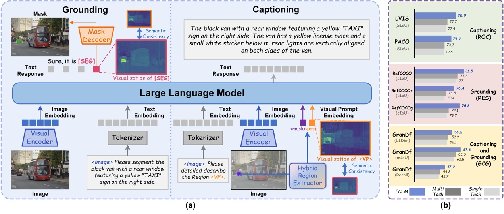
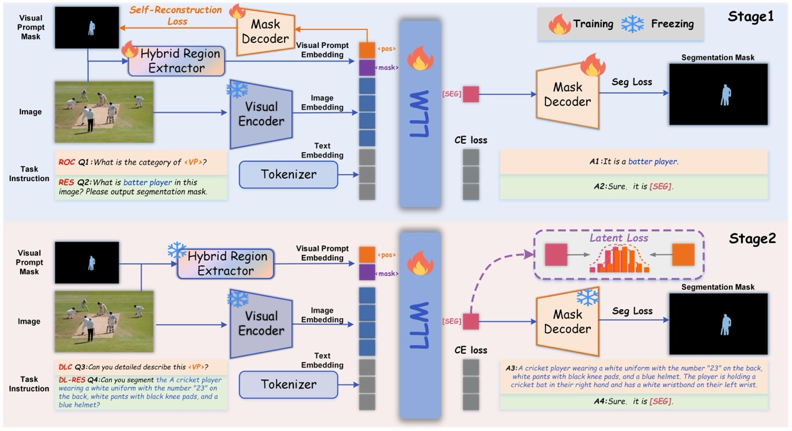
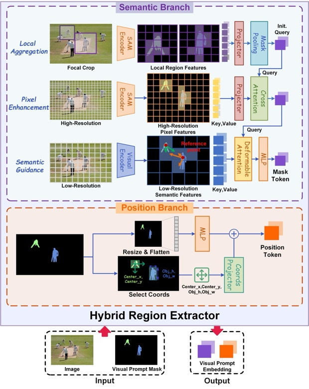
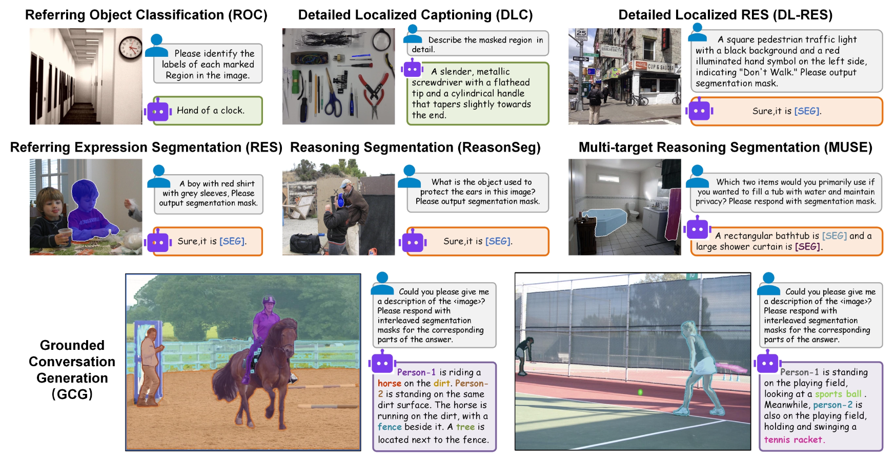
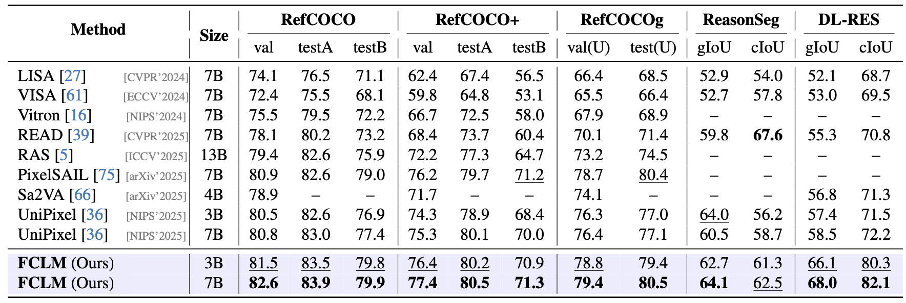
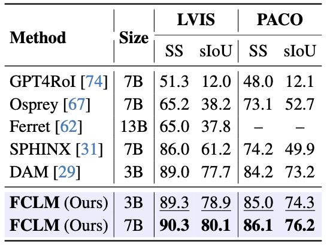
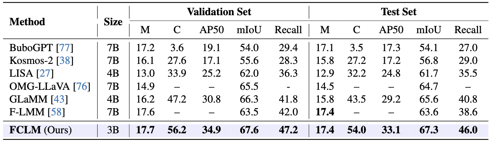

Hugging Visual Prompt and Segmentation Tokens:
Consistency Learning for Fine-Grained Visual Understanding in MLLMs
Jing Yang, Sen Yang, Boqiang Duan, Ming Dai, Wei Zhang, Xiao Tan, Kunbin Chen, Wei He, Jingdong Wang, Hanli Wang
Overview:
Fine-grained visual understanding in multimodal large language models (MLLMs) typically revolves around two primary sub-tasks: region-level captioning and pixel-level grounding. Current state-of-the-art methods often optimize these tasks independently or rely on task-specific pipeline designs, overlooking the strong intrinsic symmetry and semantic relationship between visual prompt embeddings (<VP>) and segmentation tokens ([SEG]). As illustrated in Fig. 1(a), these two representations actually share similar spatial-semantic distributions. Motivated by this observation, we propose a unified framework named FCLM to jointly support fine-grained visual understanding, integrating both captioning and grounding tasks through a novel consistency learning mechanism. Specifically, visual prompt embeddings are generated from the input image using a proposed hybrid region extractor. In this module, local details and global semantic contexts are progressively aggregated to enhance the visual representation. Furthermore, a consistency learning mechanism, comprising a self-reconstruction loss and a latent loss, is designed to explicitly align the visual prompt embeddings and segmentation tokens in the latent space, enabling mutually beneficial information exchange between the two tasks.
Method:
The overall architecture of FCLM is depicted in Fig. 2. FCLM comprises a visual encoder, a hybrid region extractor to derive visual prompt embeddings (<VP>), an LLM backbone for multimodal reasoning, and a mask decoder to generate mask predictions. The representation from the model encapsulates both detailed localized descriptions for captioning and precise segmentation masks for grounding. Figure 3 illustrates the hybrid region extractor, which is composed of semantic branch and position branch. The semantic branch consists of three progressive components: local aggregation, pixel enhancement, and semantic guidance. The mask token is dynamically generated by enriching high-resolution local features with global contextual semantics, while the position token is explicitly encoded using the region's spatial geometry and coordinates. Furthermore, as shown in the training pipeline (Fig. 2), a consistency learning mechanism is designed to facilitate the mutual alignment between the captioning and grounding tasks, employing a self-reconstruction loss and a latent loss to perform semantic information exchange between the visual prompt embeddings and segmentation tokens in the latent space.

Fig. 1. Overview of the proposed FCLM.

Fig. 2. Model architecture and training

Fig. 3. The architecture of hybrid region extractor.
Result:
The proposed FCLM is compared with several state-of-the-art methods across diverse visual understanding benchmarks, with the comprehensive quantitative results shown in Table 1 to Table 3. Qualitative experiments are further conducted to verify the effectiveness of the proposed FCLM, as illustrated in Fig. 4. Across various challenging scenarios, including detailed localized descriptions, distinguishing similarly shaped objects, and segmenting multiple targets from complex reasoning instructions, FCLM demonstrates robust performance in fine-grained captioning and grounding.

Fig. 4. Visualization results.
Tab. 1. Performance of pixel-level grounding (RES, ReasonSeg, and DL-RES).

Tab. 2. Performance of referring object classification (ROC).

Tab. 3. Performance of grounded conversation generation (GCG).

Source Code:
Original illustration: image placeholderFCLM1.0.zip
Citation:
Please cite the following paper if you find this work useful:
Jing Yang, Sen Yang, Boqiang Duan, Ming Dai, Wei Zhang, Xiao Tan, Kunbin Chen, Wei He, Jingdong Wang, and Hanli Wang, Hugging Visual Prompt and Segmentation Tokens: Consistency Learning for Fine-Grained Visual Understanding in MLLMs, The Thirty-Ninth IEEE/CVF Conference on Computer Vision and Pattern Recognition (CVPR'26), Denver, CO, USA, pp. 5175-5186, Jun. 3-7, 2026.